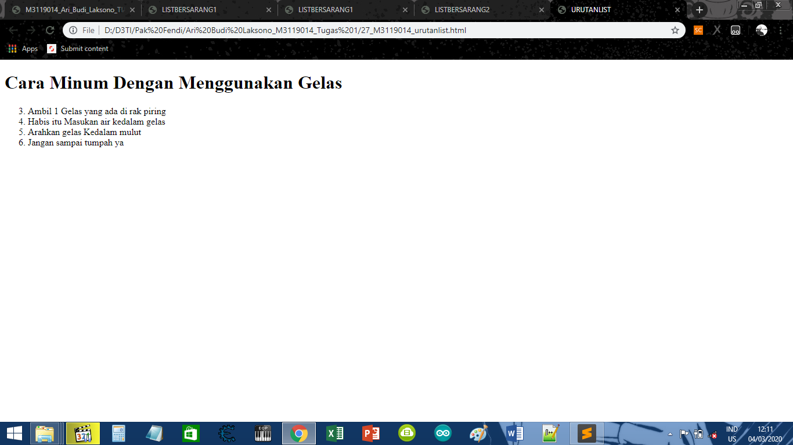

Membuat Tutorial Urutan List
KODE PROGRAM
<!DOCTYPE html>
<html>
<head>
<meta charset-"UTF-8">
<title>URUTAN LIST</title>
</head>
<body>
<h1> Cara Minum Dengan Menggunakan Gelas</h1>
<ol start="3">
<li>Ambil 1 Gelas yang ada di rak piring</li>
<li>Habis itu Masukan air kedalam gelas</li>
<li>Arahkan gelas Kedalam mulut</li>
<li>Jangan sampai tumpah ya</li>
</ol>
</body>
</html>
HASIL PROGRAM
Cara Minum Dengan Menggunakan Gelas
- Ambil 1 Gelas yang ada di rak piring
- Habis itu Masukan air kedalam gelas
- Arahkan gelas Kedalam mulut
- Jangan sampai tumpah ya
SCREENSHOT

KESIMPULAN
Dari koding di atas, Dapat disimpulkan bahwa cara membuat unorderlist dengan cara menuliskan
<ol start=""></ol>, <ul></ul>, dan <li></li>
Kembali Ke Halaman Utama